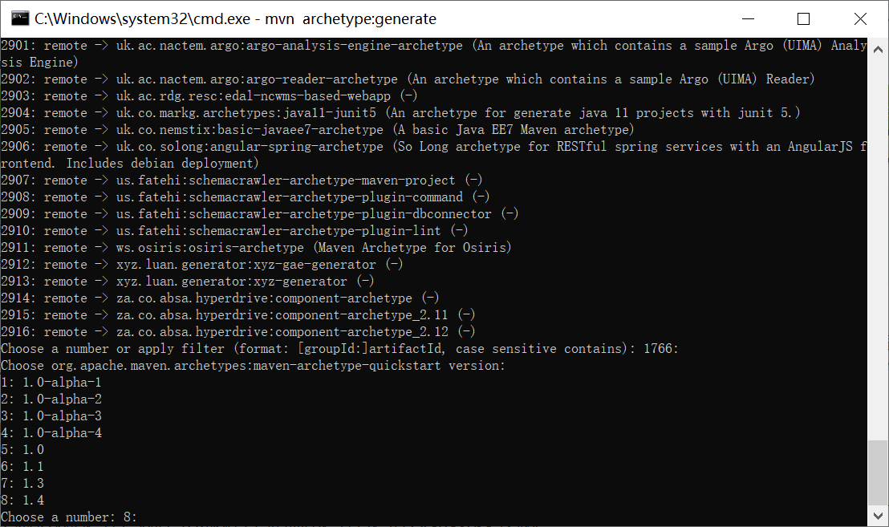
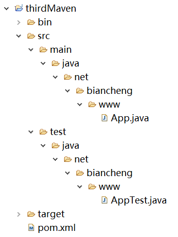

Maven Archetype(原型/模板)
Archetype 是 Maven 项目的模板工具包，它定义了 Maven 项目的基本架构。Archetype 为开发人员提供了数千种创建 Maven 项目的模板，Maven 通过这些模板可以帮助用户快速的生成项目的目录结构以及 POM 文件。
Maven Archetype 由下面 5 个模块组成：
虽然 ArcheType 只是一个插件，但其应用范围十分的广泛，几乎所有的主流 IDE（例如 Eclipse、NetBeans 和 IntelliJ IDEA）都在集成 Maven 时着重继承了 Archetype 特性，以方便用户快速的创建 Maven 项目。
执行以下命令可以帮助用户快速的创建 Maven 项目.
Maven 将开始处理，并要求选择所需的项目模板。
2. 直接回车，选择默认选项（1744：maven-archetype-quickstart）。
接下来，Maven 选择 Archetype 版本。
直接回车，选择默认选项（8：maven-archetype-quickstart：1.4）。
Maven 要求提供项目的详细信息，根据要求输入项目的详细信息，若使用默认值，则直接回车即可。
Maven 要求用户确认信息，直接回车或输入字母 Y 再按下回车键确认信息。若信息有误，则需要先输入除字母 Y 之外得其他字母按钮，在回车即可重新输入。
以上信息确认完成过后，Maven 开始构建项目结构，并显示如下内容。
Maven 为项目生成了一个 POM 文件，如下所示。
Maven 创建项目时，还自动生成了两个示例类文件： App.java 和 AppTest.java。
App.java 代码如下。
AppTest.java 代码如下。
Maven Archetype 由下面 5 个模块组成：
- maven-archetype-plugin：Archetype 插件。
- archetype-packaging：用于描述 Archetype 的生命周期与构建项目软件包。
- archetype-models：用于描述类与引用。
- archetype-common：核心类。
- archetype-testing：用于测试 Maven Archetype 的内部组件。
maven-archetype-plugin
我们知道 Maven 的所有功能都是通过插件实现的，Archetype 也不例外，它是由一个名为 maven-archetype-plugin 的插件实现的，该插件提供了 ArcheType 的所有功能。虽然 ArcheType 只是一个插件，但其应用范围十分的广泛，几乎所有的主流 IDE（例如 Eclipse、NetBeans 和 IntelliJ IDEA）都在集成 Maven 时着重继承了 Archetype 特性，以方便用户快速的创建 Maven 项目。
执行以下命令可以帮助用户快速的创建 Maven 项目.
mvn archetype:generate
为了满足用户的需求，Maven 为用户提供了大量不同类型的 Archetype 模板（到本教程编写时共提供了 2916 个 Archetype 模板）。
在执行以上命令时，Maven 会输出一个 ArcheType 列表，每个ArcheType 前面都对应一个编号，我们可以根据不同的需求选择合适的 Archetype。

图1：Maven Archetype 模板列表
说到底，Archetype 只是一个模板，为了保持模板的通用性，它的很多重要的信息都是可配置的，在用户选择了 Archetype 后，还需要提供一些关于项目的基本参数，主要包括以下参数：
- groupId
- artifactId
- version
- package
在输入以上参数后，Archetype 插件就能够为用户生成项目的基本目录结构和 POM 文件了。
示例 1
1. 打开命令控制台，跳转到 D:\maven 目录中，执行以下 Maven 命令。mvn archetype:generate
Maven 将开始处理，并要求选择所需的项目模板。
[INFO] Scanning for projects... [INFO] [INFO] ------------------< org.apache.maven:standalone-pom >------------------- [INFO] Building Maven Stub Project (No POM) 1 [INFO] --------------------------------[ pom ]--------------------------------- [INFO] [INFO] >>> maven-archetype-plugin:3.2.0:generate (default-cli) > generate-sources @ standalone-pom >>> [INFO] [INFO] <<< maven-archetype-plugin:3.2.0:generate (default-cli) < generate-sources @ standalone-pom <<< [INFO] [INFO] [INFO] --- maven-archetype-plugin:3.2.0:generate (default-cli) @ standalone-pom --- [INFO] Generating project in Interactive mode …… 2860: remote -> tk.skuro:clojure-maven-archetype (A simple Maven archetype for Clojure) 2861: remote -> top.lshaci:framework-archetype (top lshaci framework maven archetype) 2862: remote -> top.marchand.archetype:sie-xf-prio-dep-import-generic ([ELS] Modèle de projet d'import Flash basé sur l'importeur générique) 2863: remote -> top.ssrsdev:eightroes-plugin-archetype (eightroes-webapp-archetype) 2864: remote -> top.ssrsdev:eightroes-webapp-archetype (eightroes-webapp-archetype) 2865: remote -> tr.com.lucidcode:kite-archetype (A Maven Archetype that allows users to create a Fresh Kite project) 2866: remote -> tr.com.obss.sdlc.archetype:obss-archetype-java (This archetype provides a common skelton for the Java packages.) 2867: remote -> tr.com.obss.sdlc.archetype:obss-archetype-webapp (This archetype provides a skelton for the Java Web Application packages.) 2868: remote -> ua.co.gravy.archetype:single-project-with-junit-and-slf4j (Create a single project with jUnit, Mockito and slf4j dependencies.) 2869: remote -> uk.ac.ebi.gxa:atlas-archetype (Archetype for generating a custom Atlas webapp) 2870: remote -> uk.ac.gate:gate-plugin-archetype (Maven archetype to create a new GATE plugin project.) 2871: remote -> uk.ac.gate:gate-pr-archetype (Maven archetype to create a new GATE plugin project including a sample PR class (an empty LanguageAnalyser).) 2872: remote -> uk.ac.nactem.argo:argo-analysis-engine-archetype (An archetype which contains a sample Argo (UIMA) Analysis Engine) 2873: remote -> uk.ac.nactem.argo:argo-reader-archetype (An archetype which contains a sample Argo (UIMA) Reader) 2874: remote -> uk.ac.rdg.resc:edal-ncwms-based-webapp (-) 2875: remote -> uk.co.markg.archetypes:java11-junit5 (An archetype for generate java 11 projects with junit 5.) 2876: remote -> uk.co.nemstix:basic-javaee7-archetype (A basic Java EE7 Maven archetype) 2877: remote -> uk.co.solong:angular-spring-archetype (So Long archetype for RESTful spring services with an AngularJS frontend. Includes debian deployment) 2878: remote -> us.fatehi:schemacrawler-archetype-maven-project (-) 2879: remote -> us.fatehi:schemacrawler-archetype-plugin-command (-) 2880: remote -> us.fatehi:schemacrawler-archetype-plugin-dbconnector (-) 2881: remote -> us.fatehi:schemacrawler-archetype-plugin-lint (-) 2882: remote -> ws.osiris:osiris-archetype (Maven Archetype for Osiris) 2883: remote -> xyz.luan.generator:xyz-gae-generator (-) 2884: remote -> xyz.luan.generator:xyz-generator (-) 2885: remote -> za.co.absa.hyperdrive:component-archetype (-) Choose a number or apply filter (format: [groupId:]artifactId, case sensitive contains): 1744:
2. 直接回车，选择默认选项（1744：maven-archetype-quickstart）。
接下来，Maven 选择 Archetype 版本。
Choose org.apache.maven.archetypes:maven-archetype-quickstart version: 1: 1.0-alpha-1 2: 1.0-alpha-2 3: 1.0-alpha-3 4: 1.0-alpha-4 5: 1.0 6: 1.1 7: 1.3 8: 1.4 Choose a number: 8:
直接回车，选择默认选项（8：maven-archetype-quickstart：1.4）。
Maven 要求提供项目的详细信息，根据要求输入项目的详细信息，若使用默认值，则直接回车即可。
Define value for property 'groupId': net.biancheng.www Define value for property 'artifactId': thirdMaven Define value for property 'version' 1.0-SNAPSHOT: : Define value for property 'package' net.biancheng.www: :
Maven 要求用户确认信息，直接回车或输入字母 Y 再按下回车键确认信息。若信息有误，则需要先输入除字母 Y 之外得其他字母按钮，在回车即可重新输入。
Confirm properties configuration: groupId: net.biancheng.www artifactId: thirdMaven version: 1.0-SNAPSHOT package: net.biancheng.www Y: :
以上信息确认完成过后，Maven 开始构建项目结构，并显示如下内容。
[INFO] ---------------------------------------------------------------------------- [INFO] Using following parameters for creating project from Archetype: maven-archetype-quickstart:1.4 [INFO] ---------------------------------------------------------------------------- [INFO] Parameter: groupId, Value: net.biancheng.www [INFO] Parameter: artifactId, Value: thirdMaven [INFO] Parameter: version, Value: 1.0-SNAPSHOT [INFO] Parameter: package, Value: net.biancheng.www [INFO] Parameter: packageInPathFormat, Value: net/biancheng/www [INFO] Parameter: package, Value: net.biancheng.www [INFO] Parameter: version, Value: 1.0-SNAPSHOT [INFO] Parameter: groupId, Value: net.biancheng.www [INFO] Parameter: artifactId, Value: thirdMaven [INFO] Project created from Archetype in dir: d:\maven\thirdMaven [INFO] ------------------------------------------------------------------------ [INFO] BUILD SUCCESS [INFO] ------------------------------------------------------------------------ [INFO] Total time: 02:39 min [INFO] Finished at: 2021-03-03T16:18:11+08:00 [INFO] ------------------------------------------------------------------------
项目结构
进入 D:\maven 目录，我们可以看到 Maven 已经创建了一个名为 thirdMaven 项目，其目录结构如下图。

图1：目录结构
图1：目录结构
Maven 为项目生成了一个 POM 文件，如下所示。
<?xml version="1.0" encoding="UTF-8"?>
<project xmlns="http://maven.apache.org/POM/4.0.0" xmlns:xsi="http://www.w3.org/2001/XMLSchema-instance"
xsi:schemaLocation="http://maven.apache.org/POM/4.0.0 http://maven.apache.org/xsd/maven-4.0.0.xsd">
<modelVersion>4.0.0</modelVersion>
<groupId>net.biancheng.www</groupId>
<artifactId>thirdMaven</artifactId>
<version>1.0-SNAPSHOT</version>
<name>thirdMaven</name>
<!-- FIXME change it to the project's website -->
<url>http://www.example.com</url>
<properties>
<project.build.sourceEncoding>UTF-8</project.build.sourceEncoding>
<maven.compiler.source>1.7</maven.compiler.source>
<maven.compiler.target>1.7</maven.compiler.target>
</properties>
<dependencies>
<dependency>
<groupId>junit</groupId>
<artifactId>junit</artifactId>
<version>4.11</version>
<scope>test</scope>
</dependency>
</dependencies>
<build>
<pluginManagement><!-- lock down plugins versions to avoid using Maven defaults (may be moved to parent pom) -->
<plugins>
<!-- clean lifecycle, see https://maven.apache.org/ref/current/maven-core/lifecycles.html#clean_Lifecycle -->
<plugin>
<artifactId>maven-clean-plugin</artifactId>
<version>3.1.0</version>
</plugin>
<!-- default lifecycle, jar packaging: see https://maven.apache.org/ref/current/maven-core/default-bindings.html#Plugin_bindings_for_jar_packaging -->
<plugin>
<artifactId>maven-resources-plugin</artifactId>
<version>3.0.2</version>
</plugin>
<plugin>
<artifactId>maven-compiler-plugin</artifactId>
<version>3.8.0</version>
</plugin>
<plugin>
<artifactId>maven-surefire-plugin</artifactId>
<version>2.22.1</version>
</plugin>
<plugin>
<artifactId>maven-jar-plugin</artifactId>
<version>3.0.2</version>
</plugin>
<plugin>
<artifactId>maven-install-plugin</artifactId>
<version>2.5.2</version>
</plugin>
<plugin>
<artifactId>maven-deploy-plugin</artifactId>
<version>2.8.2</version>
</plugin>
<!-- site lifecycle, see https://maven.apache.org/ref/current/maven-core/lifecycles.html#site_Lifecycle -->
<plugin>
<artifactId>maven-site-plugin</artifactId>
<version>3.7.1</version>
</plugin>
<plugin>
<artifactId>maven-project-info-reports-plugin</artifactId>
<version>3.0.0</version>
</plugin>
</plugins>
</pluginManagement>
</build>
</project>
Maven 创建项目时，还自动生成了两个示例类文件： App.java 和 AppTest.java。
App.java 代码如下。
package net.biancheng.www;
/**
* Hello world!
*/
public class App {
public static void main(String[] args) {
System.out.println("Hello World!");
}
}
AppTest.java 代码如下。
package net.biancheng.www;
import static org.junit.Assert.assertTrue;
import org.junit.Test;
/**
* Unit test for simple App.
*/
public class AppTest {
/**
* Rigorous Test :-)
*/
@Test
public void shouldAnswerWithTrue() {
assertTrue(true);
}
}
关注公众号「站长严长生」，在手机上阅读所有教程，随时随地都能学习。内含一款搜索神器，免费下载全网书籍和视频。

微信扫码关注公众号